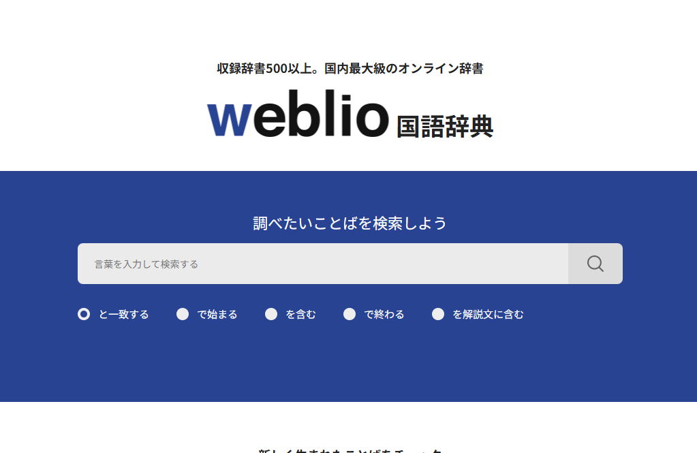
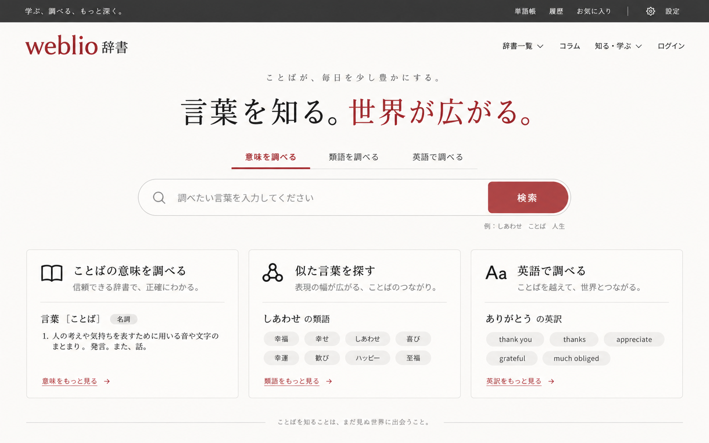

まず良かったところ
- 複数の辞書・用語集をまとめて調べられる
- 意味・類語・英訳など、目的に応じて言葉を探せる
- 身近な言葉から専門用語まで、知識を広げるきっかけになる
Gallery 002
言葉を調べる入口を、もっと分かりやすく。
リデザイン公開
第2弾は、辞書・百科事典のWeblio。さまざまな辞書から言葉を調べられる良さを大切にしながら、検索から意味の理解へつながる入口を考えます。意味・類語・英和／和英を切り替えられるトップページを制作しました。


知りたい言葉から、広がる理解へ。
検索を起点に、意味や関連する言葉へ自然に進める辞書の入口を目指しました。白を基調に赤をアクセントとし、目的別の辞書選択と読みやすい余白を設計。木漏れ日の写真風AI生成画像を添え、言葉との出会いを視覚でも楽しめるトップページに仕上げました。
辞書を引く目的は、言葉を見つけるだけでなく、その意味を理解すること。多様な辞書につながる良さを残しながら、知りたいことへ迷わず進める入口を考えていきたいです。